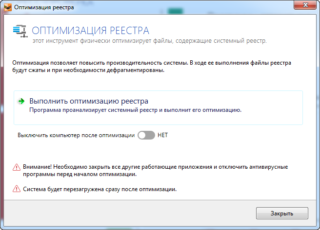

Реестр Windows (системный реестр) - это иерархическая (древовидная) база данных,
содержащая записи, определяющие параметры и настройки операционных систем Microsoft Windows.
Реестр в том виде, как он выглядит при просмотре редактором реестра, формируется из данных,
источниками которых являются файлы реестра и информация об оборудовании, собираемая в процессе загрузки.


 Reg Organizer CCleaner Work with Registry
Reg Organizer CCleaner Work with Registry
Наверх
Reg Organizer - многофункциональный менеджер и чистильщик реестра и конфигурационных файлов. Позволяет
просматривать, очищать, оптимизировать и редактировать системный реестр, осуществлять предварительный просмотр
импортируемых reg-файлов (в том числе и из Проводника).
Программа предоставляет возможность чистить реестр, производя глубокий поиск и находя все ключи реестра, относящиеся
к данному приложению, удалять из системы остатки деинсталлированных приложений. Поддерживает функции управления
конфигурационными файлами различных типов.
Главное окно Reg Organizer сразу показывает какие возможности у программы и чего от нее ожидать.
Более не сжатое и красивое оформление ежели, чем Work with Registry. Сразу же сканирование определяет сколько
места в системе можно освободить, показывает возможность чистки приватных данных,
следы удаленных программ, но экспресс-проверку можно отключать при желании.
Перейдем к операциям по работе с реестром. Начнем с оптимизации реестра, что находится во вкладке для всех пользователей.
Это операция позволяет повысить производительность системы, в ходе работы файлы реестра будут сжаты и при необходимости дефрагментированы.
Но это операция требует принудительной перезагрузки системы и просит закрыть прочие работающие приложения и антивирус:

Следующая операция "Редактор реестра", которая находится во вкладке "Разные инструменты",
позволяет нам редактировать реестр, просмратривать ключи, создавать их, искать. Создавать различные параметры или вовсе удалять:
Инструмент "Важные разделы реестра" отображает различные разделы реестра, где могут содержаться ошибки, которые можно удалять.
Рассмотрим вкладку "Недавние". В первую очередь перечисляются ошибочные записи, которые следует удалить.
Это в основном записи о уже удаленных файлах. Ниже отображается информация о количестве всего записей и ошибочных записей,
рядом с которыми уже выделяется слово удалить, что позволяет удалить эти записи все автоматически без ручного выбора каждого.
Благодаря центру отмены изменений можно вернуть удаленные записи:
Так же в этом же инструменте можно рассмотреть элементы относящиеся к записи, нужно всего лишь выбрать необходимую запись,
нажав правую кнопку мыши, в открывшемся свитке выбрать "Показать элементы...":
Перейдем к последнему инструменту по работу с реестром. Снимки реестра позволяет сравнивать состояния двух реестров.
В открывшемся окошке можно сделать снимки реестра, которым можно дать названия и автоматически ставится дата снимка:
Сравним снимок реестра с текущем реестром:
Reg Organizer замечательная и универсальная программа, позволяет умело работать с реестром, оптимизировать систему, очищать систему,
удаляю ненужные файлы, программы, записи в реестре и это лишь часть возможностей. Для полноценного использования Reg Organizer
необходимо купить лицензию, но и без нее можно пользоваться, особенно простым пользователям.
Официальный сайт разработчиков программы: https://www.chemtable.com/ru
Наверх
CCleaner
Наверх
CCleaner - лучшая бесплатная чистящая утилита, главные особенности которой - безопасное удаление мусора из системы,
очистка жесткого диска от ненужных файлов и исправление ошибочных записей в реестре.
ССКлинер проводит качественную оптимизацию Windows в ручном и автоматическом режиме.
Главное окно утилиты представляется в довольно простом и понятливом виде. Главным открывается очистка системы от временных, кэш,
куки файлов. Очистки браузеров, проводника, самой системы, приложений, утилит и от прочих файлов, занимающие пространство памяти.
Но перейдем к возможностям утилита по работе с реестром, в принципе, ради чего я и взял на рассмотрение CCleaner.В целом вся работа
с реестром сводится к поиску проблем и ошибок и их исправления. Но так же можно определить в каких типах библиотек искать. Можно добавлять
определенные проблемы в исключения, создавать отчет. Для подробного рассмотрения можно открыть проблему в RegEdit (Редактор реестра Windows)

 Приступи к исправлению ошибок реестра. Я отметил все области. И мне выдало списком множество ошибок с название проблемы и расположением.
Перед тем, как приступить к исправлению открывается окно с предложением сохранить резервные копии:
Приступи к исправлению ошибок реестра. Я отметил все области. И мне выдало списком множество ошибок с название проблемы и расположением.
Перед тем, как приступить к исправлению открывается окно с предложением сохранить резервные копии:
 Далее нам в окне по одному выводятся проблемы, краткое описание проблемы и её решение. Наше решение довольно простое,
нужно лишь нажать исправить или же исправить все отмеченные ошибки, что сильно упрощает все действия:
Так же хочу отметить, что CCleaner является универсальной программой, так как позволяет выполнять помимо очистки и решения проблем реестра,
ряд других сервисных операций. Доступ к удалению/восстановлению программ. Весьма полезная функиция назначение автозагрузки Windows,
включение и выключению запланирванных задач. Анализ дисков, поиск дублей, восстановление системы и даже управление дополенениями браузера
Далее нам в окне по одному выводятся проблемы, краткое описание проблемы и её решение. Наше решение довольно простое,
нужно лишь нажать исправить или же исправить все отмеченные ошибки, что сильно упрощает все действия:
Так же хочу отметить, что CCleaner является универсальной программой, так как позволяет выполнять помимо очистки и решения проблем реестра,
ряд других сервисных операций. Доступ к удалению/восстановлению программ. Весьма полезная функиция назначение автозагрузки Windows,
включение и выключению запланирванных задач. Анализ дисков, поиск дублей, восстановление системы и даже управление дополенениями браузера
 Подробнее про возможности можете рассмотреть на русскоязычном сайте программы http://ccleaner4you.ru
Возможности CCleaner исправления реестра:
-Проверка реестра на наличие ошибок, битых записей и исправление;
-Неправильных расширений файлов;
-Элементов управления ActiveX;
-«Битых» и отсутствующих системных DLL;
-Шрифтов, ссылок файлов помощи;
-Неправильных путей приложений;
-Отсутствующих иконок, ярлыков.
Официальный сайт разработчиков программы: http://www.piriform.com/ccleaner
Подробнее про возможности можете рассмотреть на русскоязычном сайте программы http://ccleaner4you.ru
Возможности CCleaner исправления реестра:
-Проверка реестра на наличие ошибок, битых записей и исправление;
-Неправильных расширений файлов;
-Элементов управления ActiveX;
-«Битых» и отсутствующих системных DLL;
-Шрифтов, ссылок файлов помощи;
-Неправильных путей приложений;
-Отсутствующих иконок, ярлыков.
Официальный сайт разработчиков программы: http://www.piriform.com/ccleaner
Наверх
Work with Registry - великолепная бесплатная программа от команды UsefulUtils,
предназначенная для очистки реестра от неверных записей, параметров и ошибочных ключей.
Главное окно Work with Registry выглядит относительно просто и понятно.
Можно поставить два варианта возможных действий в основном дисплее: очистка и поиск:
 Проверим работоспособность по очистке реестра. В окне очистка нажимаем проверить и ждем результатов.
Ниже в дисплее выводятся все ключи с расположением и ошибками:
Результат исправления ошибок не особо радует. Всего одна ошибка исправилась, остальные утилита зачла неисправными:
Опробуем поиск по введенному тексту. Введем "key" и результат представлен ниже. Можно флажочком отмечать и удалять при необходимости.
Настройки Work with Registry позволяют настроить установки операций очистки и поиска:
Проверим работоспособность по очистке реестра. В окне очистка нажимаем проверить и ждем результатов.
Ниже в дисплее выводятся все ключи с расположением и ошибками:
Результат исправления ошибок не особо радует. Всего одна ошибка исправилась, остальные утилита зачла неисправными:
Опробуем поиск по введенному тексту. Введем "key" и результат представлен ниже. Можно флажочком отмечать и удалять при необходимости.
Настройки Work with Registry позволяют настроить установки операций очистки и поиска:

 Во вкладке помощь мы можем разузнать о программе. Нам открывается окно с сайтом разработчиков и почтой:
Во вкладке помощь мы можем разузнать о программе. Нам открывается окно с сайтом разработчиков и почтой:
 Хотелось бы отметить, что Work with Registry очень простая в применении программа, кроме того, занимает совсем мало места и
про системные требования и нечего говорить. Еще один качественный плюс это доступность, утилита соверешенно бесплатна.
Официальный сайт разработчиков программы: http://rusopen.com
Наверх
Хотелось бы отметить, что Work with Registry очень простая в применении программа, кроме того, занимает совсем мало места и
про системные требования и нечего говорить. Еще один качественный плюс это доступность, утилита соверешенно бесплатна.
Официальный сайт разработчиков программы: http://rusopen.com
Наверх